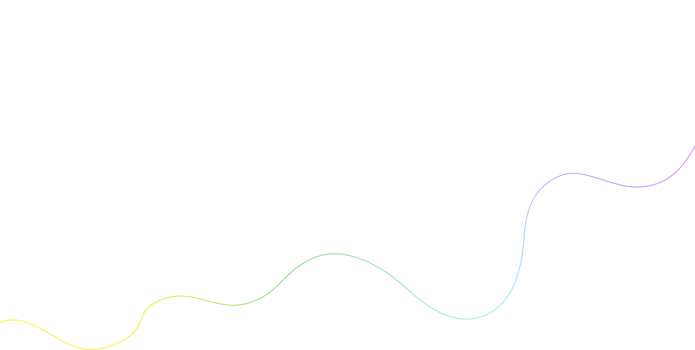
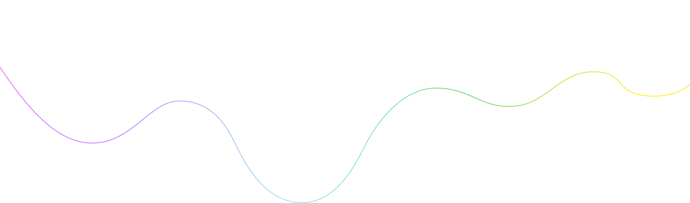
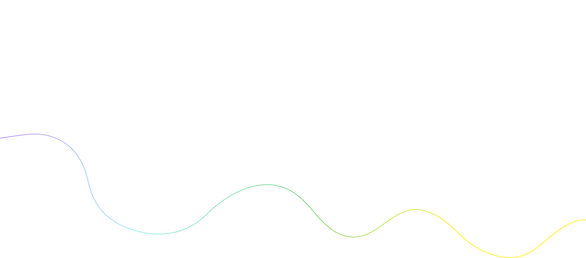
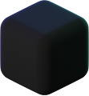

Вместе со Screenshoter можно в один клик сделать снимок или записать происходящее на экране ПК, чтобы поделиться с кем угодно



Больше не нужно искать две отдельные программы для скриншотов и записи экрана. Screenshoter поможет сделать снимок экрана, записать видео и поделиться им с кем угодно. Можно выделить весь экран, определенную область или активное окно



Недостаточно снимков? Запишите происходящее на экране со своим голосом или звуком системы.
Достаточно нажать две кнопки мыши, выделить необходимую область и начнется запись видео с экрана. Быстро и без сложных настроек
.png)
Не нужно запоминать комбинации клавиш на клавиатуре, чтобы сделать скриншот или начать записывать видео с экрана.
Просто нажмите две кнопки мыши или настройте горячую кнопку на любую удобную клавишу

Мгновенное получение ссылки на снимок или видео. Вы только нажали Enter, а ссылка уже в буфере обмена. Перейдя по ссылке, можно будет посмотреть ваш снимок или записанное видео

Более 5 инструментов для редактирования. Выделяете область и редактируете.
Если неверно выбрали область — не беда, можно без проблем её передвинуть и/или изменить размер, не удаляя то, что уже нарисовано!




Когда нужно что-то наглядно показать коллеге, исполнителю или заказчику — можно сделать снимок экрана и добавить к нему комментарий.
А если ситуация требует более детального объяснения — окей, не проблема. Screenshoter поможет записать видео экрана вместе
с вашими голосовыми комментариями
Нужно что-то наглядно объяснить? Создавайте удобные, пошаговые инструкции, добавляя комментарии
и визуальные отметки в необходимом месте скриншота.
Поделиться снимком или видеозаписью можно с помощью ссылки, которая мгновенно появляется в буфере обмена

Если в процессе работы приложения, сайта или сервиса возникла ошибка, её можно моментально зафиксировать.
Отправьте скриншот в техподдержку, где будет видно, в чем именно заключается проблема
Скачайте программу на свой ПК или ноутбук
Запустите Screenshoter: программа будет работать в фоновом режиме
Наслаждайтесь удобством и быстродействием
Нет, Screenshoter абсолютно бесплатный. Вам не нужно платить за скачивание, установку или использование программы — все функции бесплатные.
Программа доступна для Windows. Версия для других платформ пока не предусмотрена.
В Screenshoter можно делать снимки экрана и записывать видео в один клик, а также мгновенно делиться ими по ссылке.
Файлы сохраняются локально и дополнительно доступны по мгновенной ссылке в облаке.
Да, вы можете удалить любой файл со своего личного сервера через удобное меню программы.